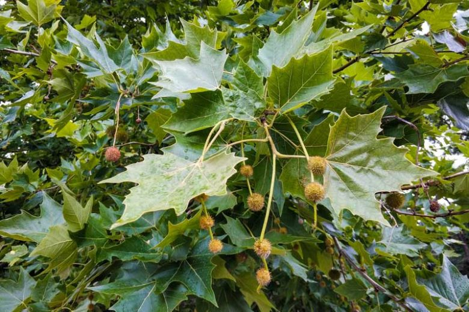
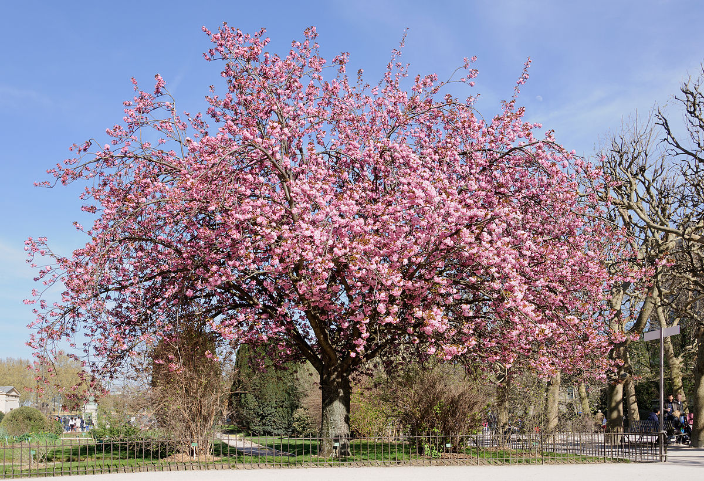
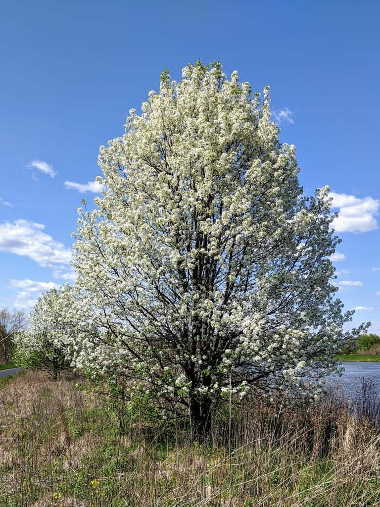
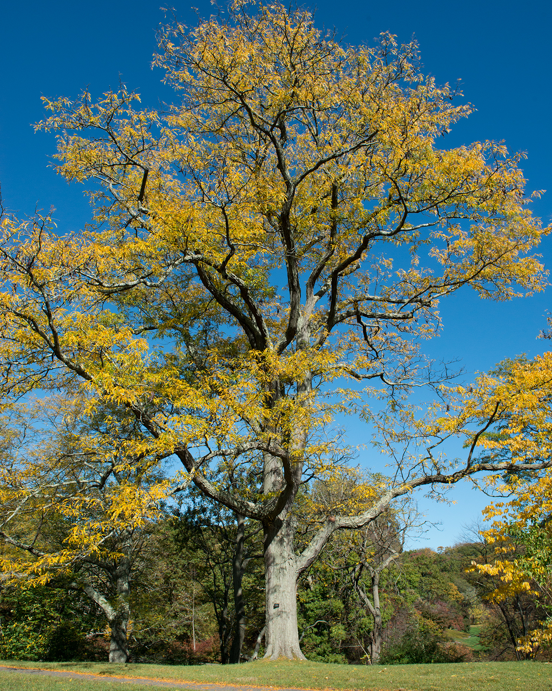
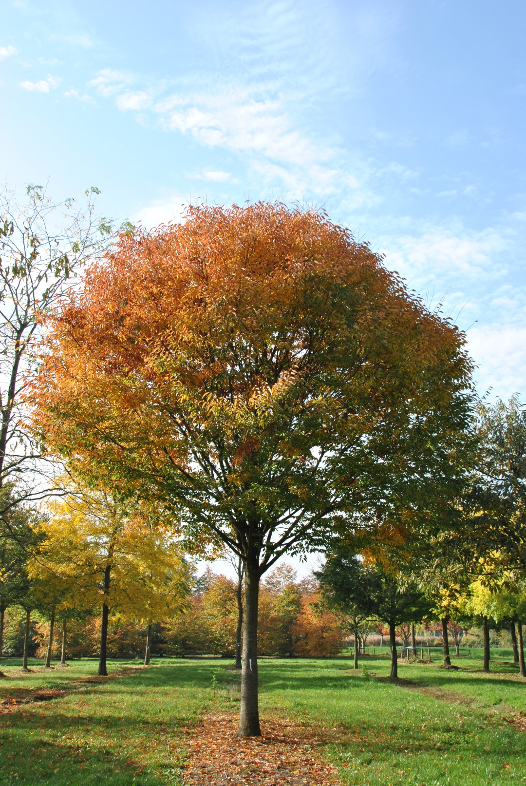
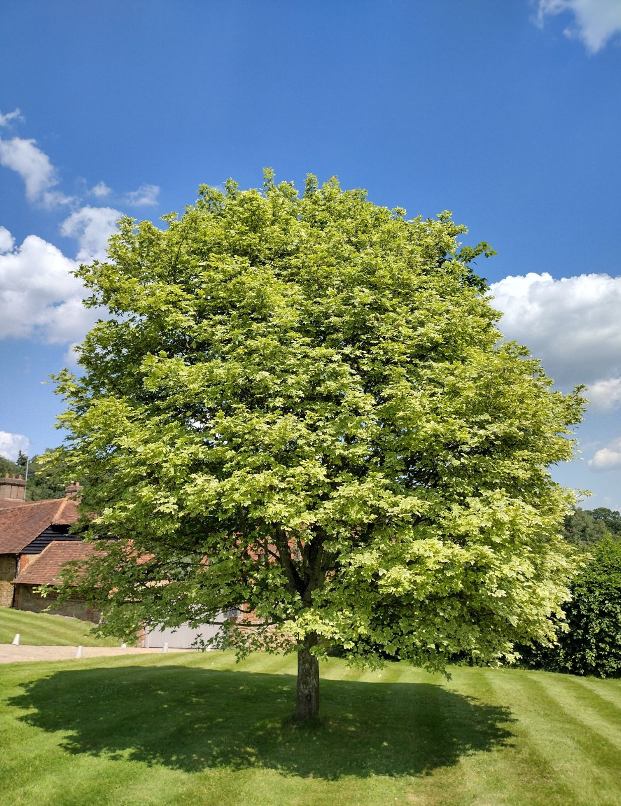
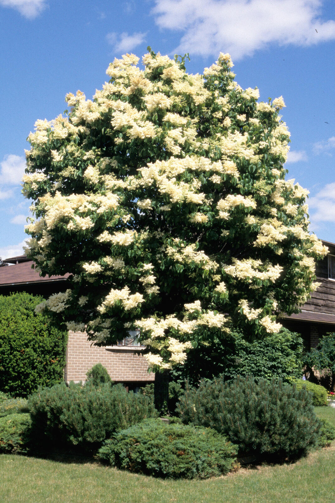

Now: Dfa
Dfa - hot summer humid continental: four distinct seasons, large seasonal temperature differences. Warm to hot (often humid) summers, freezing winters. Even precipitation throughout the year, can have dry season.
2100: Cfa
Humid Subtropical (Cfa) - Warm summers, mild winters, and rainfall distributed throughout the year.
620,376 people living here.
Average SUHI daytime: 0.79
Average SUHI nighttime: 0.18
Similar to: Philadelphia
Suggested Urban Plants

Platanus x acerifolia

Acer Rubrum

Prunus species

Pyrus calleryana

Gleditsia triacanthos
Quercus rubra

Zelkova serrata

Acer platanoides

Syringa reticulata
Ginkgo biloba